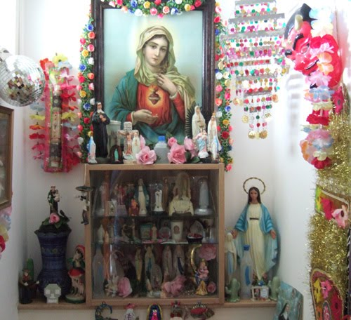

TKitsch is art (whether or not it is good art) that is deliberately designed to so move us, by presenting a well selected and perhaps much edited version of some particularly and predictably moving aspect of our shared experience, including, plausibly enough, innocent scenes of small children and our favorite pets playing and religious and other sacred icons.” (Solomon 345) Spackman’s position is somewhat shaky. Kitsch may cheapen the effect of these religious articles, not for the purchaser, but for the non-believer. It may become clear that kitsch and sentimentality manipulates our emotions, forcing the individual to have a cheesy, aaaah moment.